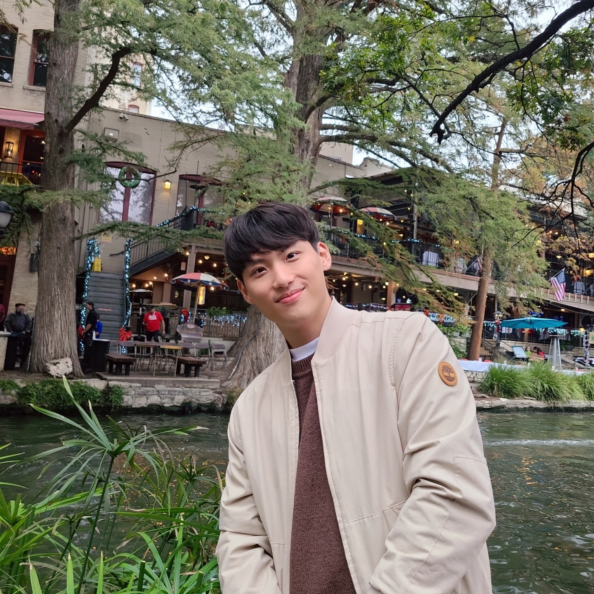

Hello!

I'm a graduate student at Texas A&M University. My research interest lies in providing mathematical background and justification in statistical methodologies in various fields. I double-majored in Mechanical engineering and Statistics and graduated with honors (Summa cum laude) from Seoul National University (SNU).
Outside of statistics, I enjoy indoor climbing, futsal, and doing workouts.
Feel free to email me at k1mjh6561 (at) tamu (dot) edu.